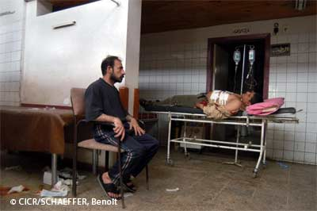

UN CIVIL QUI NE PARTICIPE PAS OU PLUS AUX HOSTILITÉS
Les civils qui ne participent pas ou plus aux hostilités ne peuvent pas être l’objet d’attaques.
De manière générale, les civils qui ne participent pas aux hostilités sont protégés par le droit international humanitaire, notamment à travers les garanties fondamentales présentes dans les textes à savoir, l’interdiction :
- des atteintes portées à la vie, à la santé ou au bien-être physique ou mental ;
- des punitions collectives ;
- des prises d’otages ;
- des actes de terrorisme (dans le sens de terreur) ;
- des atteintes à la dignité de la personne ;
- l’esclavage ;
- le pillage ;
- la menace de commettre les actes précités.
Pour certaines catégories de civils, d’autres garanties de protection sont prévues :
- pour les enfants : maintenir l’éducation, faciliter le regroupement familial, le non-recrutement au
sein des groupes armés,…. - pour le personnel sanitaire et religieux : recevoir l’aide disponible pour l’exercice de ses
fonctions,… - pour la mission médicale : importance de la mission médicale, respect de la déontologie,…
| Sources |
- Deuxième Protocole additionnel aux Conventions de Genève de 1949, 1977 : articles 4, 9, 10, 13
- Conventions de Genève, 1949 : article 3 commun
| Résumé | |
Si un civil ne participe pas ou plus aux hostilités

Il est protégé contre les effets des hostilités

Il ne peut pas être ciblé

S’il est directement attaqué, l’attaque pourrait être constitutive de crime de guerre